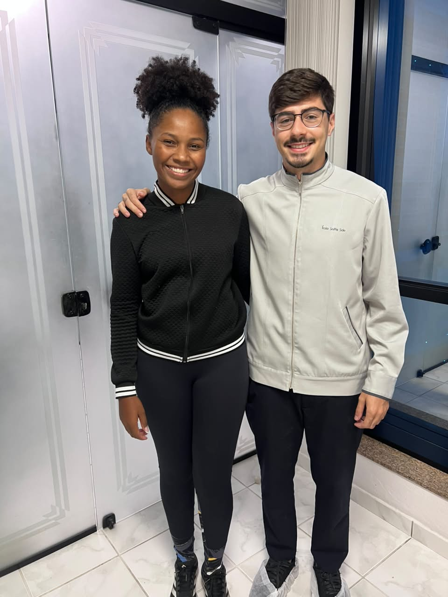

A Lorraine conviveu com facetas em resina por 5 anos.
No começo, elas faziam sentido. Mas com o tempo, deixaram de ser confortáveis e já não traziam a naturalidade que ela procurava. Sorrir já não era tão espontâneo.
Foi aí que ela decidiu mudar. Fizemos um trabalho restaurador completo, buscando mais conforto, naturalidade e equilíbrio.
E ver a Lorraine sorrindo com mais leveza foi a melhor parte de tudo 🤝